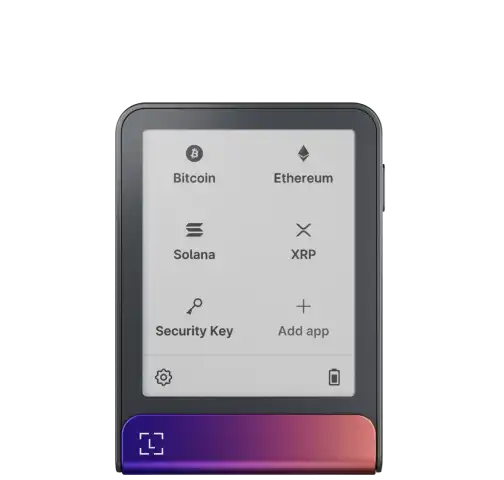
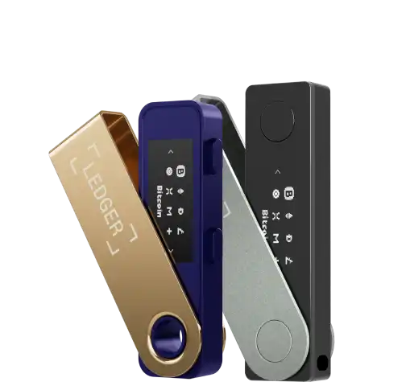

Protect your digital identity with an offline security key.
Ledger designs certified hardware security devices built around a secure-element chip. Keep your passwords, sign-ins, and sensitive credentials offline — out of reach of phishing, malware, and account takeover.
- 8M+users protected
- EAL5+certified chip
- FIDO2 compliant

Your accounts deserve more than a password.
Software-only protection lives on your phone or laptop — the same devices that get lost, phished, or compromised. A dedicated hardware key keeps the most sensitive credential operations on a physically separate, tamper-resistant device that never exposes your secrets to the computer it is plugged into.
Offline by design
Your private credentials never touch an internet-connected computer. Every signing operation happens inside the secure element — and stays there.
Phishing-proof sign-in
The device verifies the exact website you are signing in to. Fake login pages cannot trick it into releasing a credential.
Tamper-resistant chip
A certified secure element (EAL5+) guards against physical and side-channel attacks. The chip self-destructs its secrets on intrusion.
Works with your accounts
Compatible with FIDO2 / WebAuthn sign-in for major online services, password managers, and enterprise single sign-on.
Two devices. One standard of security.
Pick the form factor that fits how you work — both share the same certified secure element and the same commitment to keeping your credentials offline.

Ledger Flex
A large touchscreen security device with wireless Bluetooth pairing and USB-C. Tap-to-confirm every credential operation on a bright, on-device display.
- Secure elementEAL5+ certified
- Display2.8″ color touchscreen
- ConnectivityUSB-C & Bluetooth
- PowerRechargeable battery
- Warranty2 years

Ledger Nano
A compact, pocket-sized security key. Plug in via USB-C, confirm on the device screen, and unplug. Ideal for travel and minimal daily carry.
- Secure elementEAL5+ certified
- DisplayOLED confirmation screen
- ConnectivityUSB-C
- PowerBus-powered (no battery)
- Warranty2 years
Three steps to stronger sign-in.
Initialize the device
Power on, set a device PIN, and let the secure element generate your credentials entirely offline.
Register with your accounts
Follow the security-key setup flow in your service's account settings. The device registers a public key — your private key never leaves the device.
Sign in with a tap
At every future sign-in, plug in or pair, confirm on the device screen, and you are in. The computer never sees your secret.
Trusted by people who cannot afford a breach.
“After my password manager got hit by a phishing page, I moved every critical sign-in to a hardware key. The peace of mind is worth it.”
“We issued hardware keys to the whole engineering org. Account-takeover tickets dropped to zero within a quarter.”
“Small enough to live on my keychain, strong enough that I stopped dreading the next breach headline.”
Frequently asked questions
What is a hardware security key?
A hardware security key is a physical device that stores your sign-in credentials on a tamper-resistant chip and performs cryptographic operations offline. Unlike a password, it cannot be copied, phished, or leaked in a database breach.
How does the device protect my credentials?
Your private keys are generated and sealed inside the device's certified secure element. To sign in to an account, you must physically possess the device and confirm the operation on its screen. The computer it is plugged into only ever receives a signed assertion — never the private key itself.
Which services can I use it with?
Any service that supports the FIDO2 / WebAuthn standard, including most major online accounts, enterprise single sign-on, and modern password managers.
What happens if I lose my device?
During setup you create a one-time recovery phrase that lets you re-provision a replacement device. Without that phrase, no one — including us — can recover your credentials, which is exactly what keeps them safe.
Is the device certified?
Yes. The secure element inside every Ledger device is certified to EAL5+ under the Common Criteria framework and complies with the FIDO2 specification.
How long does the battery last?
The Flex ships with a rechargeable battery rated for weeks of typical use on a single charge. The Nano is bus-powered over USB-C and has no battery to maintain.
Take control of your digital identity.
Join 8 million people who moved their most sensitive sign-ins offline.
Explore Devices